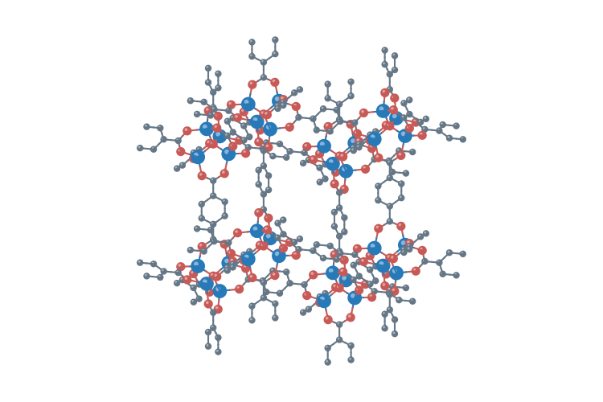

AI-driven materials & chemical discovery.

We use quantum and atomistic simulations, statistical mechanics, curated data, and artificial intelligence to discover materials for energy and separations, especially metal–organic frameworks.
Research Interests
- Computation
- Artificial Intelligence
- Materials
- Chemical Separation